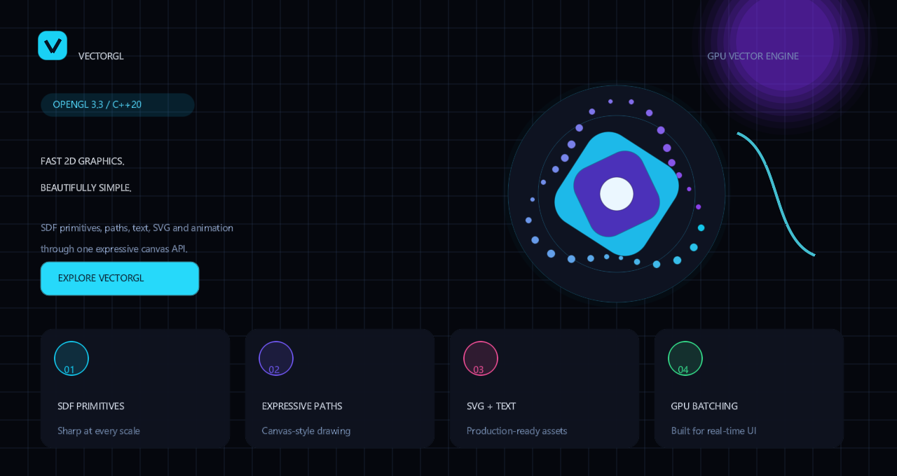

Rendered with VectorGL
See the library, not just the feature list
Every pixel below comes from the standalone C++ showcase executable. Explore more real programs for paths, animation, SVG, text, stress testing, and node editing.

Flagship showcaseSDF primitives · Bézier paths · Oklab color · animation Explore gallery →
Start here
Drop VectorGL into your CMake project
Fetch the library, link one target, and begin drawing. Dependencies are configured by CMake.
CMakeLists.txt
include(FetchContent)
FetchContent_Declare(
vectorgl
GIT_REPOSITORY https://github.com/mahtab04/vectorgl.git
GIT_TAG main
)
FetchContent_MakeAvailable(vectorgl)
target_link_libraries(your_app PRIVATE vectorgl)Core capabilities
One renderer, two ways to work
Choose direct drawing for dynamic surfaces or a scene graph for structured, animated interfaces.
Documentation
Go from first frame to polished UI
Learn the architecture, follow focused recipes, and keep the API reference close at hand.
Built in the open
Ready to draw something?
Browse the runnable examples or inspect the full source on GitHub.